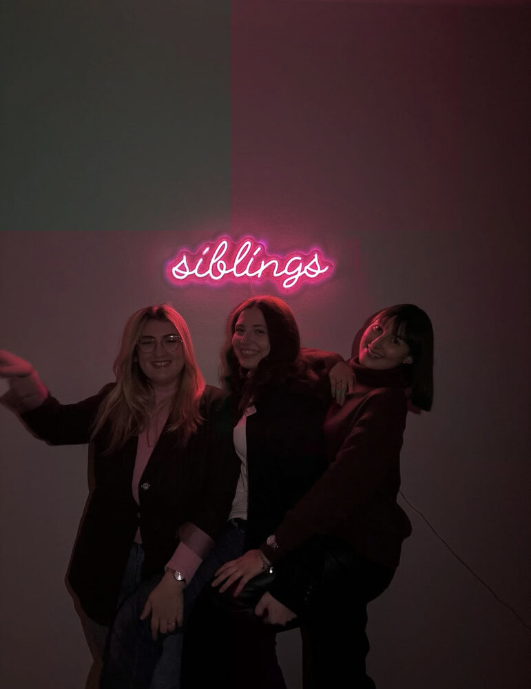

Tre siblings, tre voci
La fragilità è di tutti?
Un podcast che racconta le emozioni, le difficoltà e le esperienze di tre ragazze che hanno in comune il fatto di essere siblings: sorelle di persone con disabilità. Attraverso conversazioni sincere, ospiti e momenti di riflessione, affrontiamo temi che spesso rimangono nascosti, dimostrando che la fragilità non è una debolezza, ma una parte della vita di tutti e, forse, la nostra forza.

"...ci siamo dette: proviamo a raccontarlo."
Nuove puntate ogni due settimane, disponibili su YouTube, Spotify e Apple Podcast.
Perché esiste
Uno spazio per non sentirsi soli
Questo podcast nasce con un obiettivo semplice: creare uno spazio in cui chiunque possa sentirsi ascoltato, rappresentato e meno solo. Crediamo che parlare apertamente di ciò che viviamo possa abbattere i pregiudizi, favorire l'inclusione e ricordarci che, in modi diversi, siamo tutti fragili.
Chi siamo
Il progetto e il team
Com'è nata l'idea, l'obiettivo, e le persone dietro al microfono: Alice, Sindi, Elisa e Andrea.
Le nostre storie
Alice, Sindi, Elisa
Tre percorsi diversi, un filo comune: crescere accanto a fratelli o sorelle con disabilità.
Puntate
Tutti gli episodi
La raccolta completa delle puntate, sincronizzata dal nostro canale YouTube.